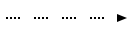

sc-element Types
Note
This is correct for only versions of sc-machine that >= 0.10.0.
Type values
| C++ name | Decimal value | Hex value |
|---|---|---|
| ScType::Unknown | 0 | 0x0 |
| ScType::Node | 1 | 0x1 |
| ScType::Connector | 16384 | 0x4000 |
| ScType::CommonEdge | 16388 | 0x4004 |
| ScType::Arc | 49152 | 0xC000 |
| ScType::CommonArc | 49160 | 0xC008 |
| ScType::MembershipArc | 49168 | 0xC010 |
| ScType::Const | 32 | 0x20 |
| ScType::Var | 64 | 0x40 |
| ScType::ConstNode | 33 | 0x21 |
| ScType::VarNode | 65 | 0x41 |
| ScType::ConstConnector | 16416 | 0x4020 |
| ScType::VarConnector | 16448 | 0x4040 |
| ScType::ConstCommonEdge | 16420 | 0x4024 |
| ScType::VarCommonEdge | 16452 | 0x4044 |
| ScType::ConstArc | 49184 | 0xC020 |
| ScType::VarArc | 49216 | 0xC040 |
| ScType::ConstCommonArc | 49192 | 0xC028 |
| ScType::VarCommonArc | 49224 | 0xC048 |
| ScType::ConstMembershipArc | 49200 | 0xC030 |
| ScType::VarMembershipArc | 49232 | 0xC050 |
| ScType::PermArc | 51216 | 0xC810 |
| ScType::TempArc | 50192 | 0xC410 |
| ScType::ConstPermArc | 51248 | 0xC830 |
| ScType::VarPermArc | 51280 | 0xC850 |
| ScType::ConstTempArc | 50224 | 0xC430 |
| ScType::VarTempArc | 50256 | 0xC450 |
| ScType::ActualTempArc | 54288 | 0xD410 |
| ScType::InactualTempArc | 58384 | 0xE410 |
| ScType::ConstActualTempArc | 54320 | 0xD430 |
| ScType::VarActualTempArc | 54352 | 0xD450 |
| ScType::ConstInactualTempArc | 58416 | 0xE430 |
| ScType::VarInactualTempArc | 58448 | 0xE450 |
| ScType::PosArc | 49296 | 0xC090 |
| ScType::NegArc | 49424 | 0xC110 |
| ScType::FuzArc | 49680 | 0xC210 |
| ScType::ConstPosArc | 49328 | 0xC0B0 |
| ScType::VarPosArc | 49360 | 0xC0D0 |
| ScType::PermPosArc | 51344 | 0xC890 |
| ScType::TempPosArc | 50320 | 0xC490 |
| ScType::ActualTempPosArc | 54416 | 0xD490 |
| ScType::InactualTempPosArc | 58512 | 0xE490 |
| ScType::ConstPermPosArc | 51376 | 0xC8B0 |
| ScType::ConstTempPosArc | 50352 | 0xC4B0 |
| ScType::ConstActualTempPosArc | 54448 | 0xD4B0 |
| ScType::ConstInactualTempPosArc | 58544 | 0xE4B0 |
| ScType::VarPermPosArc | 51408 | 0xC8D0 |
| ScType::VarTempPosArc | 50384 | 0xC4D0 |
| ScType::VarActualTempPosArc | 54480 | 0xD4D0 |
| ScType::VarInactualTempPosArc | 58576 | 0xE4D0 |
| ScType::ConstNegArc | 49456 | 0xC130 |
| ScType::VarNegArc | 49488 | 0xC150 |
| ScType::PermNegArc | 51472 | 0xC910 |
| ScType::TempNegArc | 50448 | 0xC510 |
| ScType::ActualTempNegArc | 54544 | 0xD510 |
| ScType::InactualTempNegArc | 58640 | 0xE510 |
| ScType::ConstPermNegArc | 51504 | 0xC930 |
| ScType::ConstTempNegArc | 50480 | 0xC530 |
| ScType::ConstActualTempNegArc | 54576 | 0xD530 |
| ScType::ConstInactualTempNegArc | 58672 | 0xE530 |
| ScType::VarPermNegArc | 51536 | 0xC950 |
| ScType::VarTempNegArc | 50512 | 0xC550 |
| ScType::VarActualTempNegArc | 54608 | 0xD550 |
| ScType::VarInactualTempNegArc | 58704 | 0xE550 |
| ScType::ConstFuzArc | 49712 | 0xC230 |
| ScType::VarFuzArc | 49744 | 0xC250 |
| ScType::NodeLink | 3 | 0x3 |
| ScType::NodeLinkClass | 2051 | 0x803 |
| ScType::NodeTuple | 129 | 0x81 |
| ScType::NodeStructure | 257 | 0x101 |
| ScType::NodeRole | 513 | 0x201 |
| ScType::NodeNonRole | 1025 | 0x401 |
| ScType::NodeClass | 2049 | 0x801 |
| ScType::NodeSuperclass | 4097 | 0x1001 |
| ScType::NodeMaterial | 8193 | 0x2001 |
| ScType::ConstNodeLink | 35 | 0x23 |
| ScType::ConstNodeLinkClass | 2083 | 0x823 |
| ScType::ConstNodeTuple | 161 | 0xA1 |
| ScType::ConstNodeStructure | 289 | 0x121 |
| ScType::ConstNodeRole | 545 | 0x221 |
| ScType::ConstNodeNonRole | 1057 | 0x421 |
| ScType::ConstNodeClass | 2081 | 0x821 |
| ScType::ConstNodeSuperclass | 4129 | 0x1021 |
| ScType::ConstNodeMaterial | 8225 | 0x2021 |
| ScType::VarNodeLink | 67 | 0x43 |
| ScType::VarNodeLinkClass | 2115 | 0x843 |
| ScType::VarNodeTuple | 193 | 0xC1 |
| ScType::VarNodeStructure | 321 | 0x141 |
| ScType::VarNodeRole | 577 | 0x241 |
| ScType::VarNodeNonRole | 1089 | 0x441 |
| ScType::VarNodeClass | 2113 | 0x841 |
| ScType::VarNodeSuperclass | 4161 | 0x1041 |
| ScType::VarNodeMaterial | 8257 | 0x2041 |
sc.g-designations and sc.s-designations of sc-nodes
| C++ name | SCg-code | SCs-code |
|---|---|---|
| ScType::Node | Not specified | sc_node |
| ScType::ConstNode |  |
sc_node |
| ScType::VarNode | sc_node | |
| ScType::NodeLink | Not specified | sc_link |
| ScType::NodeLinkClass | Not specified | sc_link_class |
| ScType::NodeTuple | Not specified | sc_node_tuple |
| ScType::NodeStructure | Not specified | sc_node_structure |
| ScType::NodeRole | Not specified | sc_node_role_relation |
| ScType::NodeNonRole | Not specified | sc_node_non_role_relation |
| ScType::NodeClass | Not specified | sc_node_class |
| ScType::NodeSuperclass | Not specified | sc_node_superclass |
| ScType::NodeMaterial | Not specified | sc_node_material |
| ScType::ConstNodeLink |  |
sc_link |
| ScType::ConstNodeLinkClass | Not specified | sc_link_class |
| ScType::ConstNodeTuple | sc_node_tuple | |
| ScType::ConstNodeStructure |  |
sc_node_structure |
| ScType::ConstNodeRole | sc_node_role_relation | |
| ScType::ConstNodeNonRole |  |
sc_node_non_role_relation |
| ScType::ConstNodeClass |  |
sc_node_class |
| ScType::ConstNodeSuperclass | Not specified | sc_node_superclass |
| ScType::ConstNodeMaterial | sc_node_material | |
| ScType::VarNodeLink |  |
sc_link |
| ScType::VarNodeLinkClass | Not specified | sc_link_class |
| ScType::VarNodeTuple |  |
sc_node_tuple |
| ScType::VarNodeStructure | sc_node_structure | |
| ScType::VarNodeRole |  |
sc_node_role_relation |
| ScType::VarNodeNonRole | sc_node_non_role_relation | |
| ScType::VarNodeClass | sc_node_class | |
| ScType::VarNodeSuperclass | Not specified | sc_node_superclass |
| ScType::VarNodeMaterial |  |
sc_node_material |
sc.g-designations and sc.s-designations of sc-connectors
| C++ name | SCg-code | SCs-code |
|---|---|---|
| ScType::CommonEdge | Not specified | ?<=> |
| ScType::CommonArc | Not specified | ?=> or <=? |
| ScType::MembershipArc | Not specified | ?.?> or <?.? |
| ScType::ConstCommonEdge |  |
<=> |
| ScType::VarCommonEdge |  |
_<=> |
| ScType::ConstCommonArc |  |
=> or <= |
| ScType::VarCommonArc |  |
_=> or <=_ |
| ScType::ConstMembershipArc | Not specified | .?> or <?. |
| ScType::VarMembershipArc | Not specified | _.?> or <?._ |
| ScType::PermArc | Not specified | ?-?> or <?-? |
| ScType::TempArc | Not specified | ?..?> or <?..? |
| ScType::ConstPermArc | Not specified | -?> or <?- |
| ScType::VarPermArc | Not specified | _-?> or <?-_ |
| ScType::ConstTempArc | Not specified | ..?> or <?.. |
| ScType::VarTempArc | Not specified | _..?> or <?.._ |
| ScType::ActualTempArc | Not specified | ?~?> or <?~? |
| ScType::InactualTempArc | Not specified | ?%?> or <?%? |
| ScType::ConstActualTempArc | Not specified | ~?> or <?~ |
| ScType::VarActualTempArc | Not specified | _~?> or <?~_ |
| ScType::ConstInactualTempArc | Not specified | %?> or <?% |
| ScType::VarInactualTempArc | Not specified | _%?> or <?%_ |
| ScType::PosArc | Not specified | ?.> or <.? |
| ScType::NegArc | Not specified | ?.|> or <|.? |
| ScType::FuzArc | Not specified | ?/> or </? |
| ScType::ConstPosArc | Not specified | .> or <. |
| ScType::VarPosArc | Not specified | _.> or <._ |
| ScType::PermPosArc | Not specified | ?-> or <-? |
| ScType::TempPosArc | Not specified | ?..> or <..? |
| ScType::ActualTempPosArc | Not specified | ?~> or <~? |
| ScType::InactualTempPosArc | Not specified | ?%> or <%? |
| ScType::ConstPermPosArc |  |
-> or <- |
| ScType::ConstTempPosArc |  |
..> or <.. |
| ScType::ConstActualTempPosArc | Not specified | ~> or <~ |
| ScType::ConstInactualTempPosArc | Not specified | %> or <% |
| ScType::VarPermPosArc |  |
_-> or <-_ |
| ScType::VarTempPosArc |  | _..> or <.._ |
| ScType::VarActualTempPosArc | Not specified | _~> or <~_ |
| ScType::VarInactualTempPosArc | Not specified | _%> or <%_ |
| ScType::ConstNegArc | Not specified | ?|> or <|? |
| ScType::VarNegArc | Not specified | _?|> or <|?_ |
| ScType::PermNegArc | Not specified | ?-|> or <|-? |
| ScType::TempNegArc | Not specified | ?..|> or <|..? |
| ScType::ActualTempNegArc | Not specified | ?~|> or <|~? |
| ScType::InactualTempNegArc | Not specified | ?%|> or <|%? |
| ScType::ConstPermNegArc |  |
-|> or <|- |
| ScType::ConstTempNegArc |  |
..|> or <|.. |
| ScType::ConstActualTempNegArc | Not specified | ~|> or <|~ |
| ScType::ConstInactualTempNegArc | Not specified | %|> or <|% |
| ScType::VarPermNegArc |  |
_-|> or <|-_ |
| ScType::VarTempNegArc |  |
_..|> or <|.._ |
| ScType::VarActualTempNegArc | Not specified | _~|> or <|~_ |
| ScType::VarInactualTempNegArc | Not specified | _%|> or <|%_ |
| ScType::ConstFuzArc |  |
/> or </ |
| ScType::VarFuzArc |  |
_/> or </_ |
Rules for constructing sc.s-designations of sc-connectors
The rules for constructing sc.s-designations of membership sc-arcs follow the rule for constructing sc.s-designation of membership sc-arc of unspecified constancy, permanence and positivity -- ?.?>.
- The first sign
?indicates that constancy is not specified for membership sc-arc. If membership sc-arc is constant, no sign is placed in the front of its sc.s-designation. If membership sc-arc is variable, the sign_is placed in the front of its sc.s-designation. - The second sign
.indicates that permanence is not specified for membership sc-arc. If membership sc-arc is permanent, the sign-is placed in the middle of its sc.s-designation. If membership sc-arc is temporal, the sign..is placed in the middle of its sc.s-designation. If membership sc-arc is actual temporal, the sign~is placed in the middle of its sc.s-designation. If membership sc-arc is inactual temporal, the sign%is placed in the middle of its sc.s-designation. - The third sign
?indicates that positivity is not specified for membership sc-arc. If membership sc-arc is positive, no sign is placed at the end of its sc.s-designation. If membership sc-arc is negative, the sign|is placed at the end of its sc.s-designation. - The fourth sign
>indicates the direction of membership sc-arc.
These rules also work for sc-arcs of fuzzy membership, but no permanence is specified for them in any way.
The rules for constructing sc.s-designations of common sc-arcs follow the rule for constructing sc.s-designation of common sc-arc of unspecified constancy -- ?=>.
- The first sign
?indicates that constancy is not specified for common sc-arc. If common sc-arc is constant, no sign is placed in the front of its sc.s-designation. If common sc-arc is variable, the sign_is placed in the front of its sc.s-designation. - The second sign
=indicates that sc-arc is not membership sc-arc, i.e. it has common subtype. - The third sign
>indicates the direction of common sc-arc.
For all reversed designations of sc-arcs, the construction rules work in reverse order.
The rules for construction sc.s-designations of common sc-edge follow the rules for constructing sc.s-designations of common sc-arc. The difference is that the sign < is added between the first and second signs.